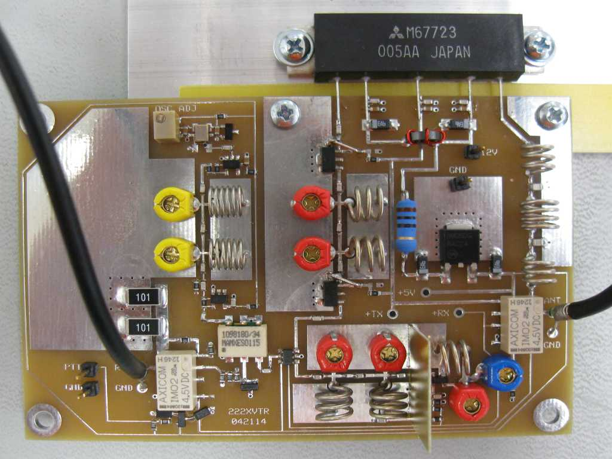

N4NGZ's 222 MHz Transverter

Introduction:
222 MHz to 144 MHz 5 watt Transverter
Here is shortcut link to 147.120 technet wiki.
Materials:
add something here
Build Notes:
add something here
Operation Notes:
add something here
References:
- schematic drawing -- prototype
- RF Parts: M67723 Power Module -- 220-225 MHz, 7 Watts
- M67723 Power Module - data sheet
- TCVCXO Oscillators 26MHz - data sheet
- RF Mixer RF/LO 5-1000MHz DBL Balanced Mixer - data sheet
- RF Switch ICs .3-2500MHz IL+.3dB IP3 52dBm - data sheet
- High Frequency / RF Relays 140 MW 4.5 V 13 - data sheet
- RF Amplifier .1-1.7GHz InGaP HBT Sm Sig Gain 12.5dB - data sheet
- Precision 3.3 Volt Low Knee Current Voltage Reference - data sheet
- Inverters - data sheet
Revised: Sunday, March 22, 2015 at 21:55:05 PM (EDT)